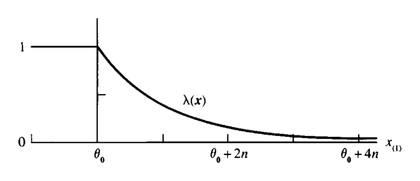
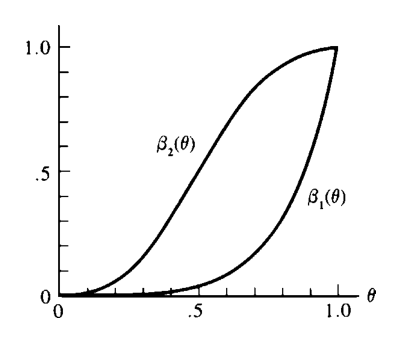
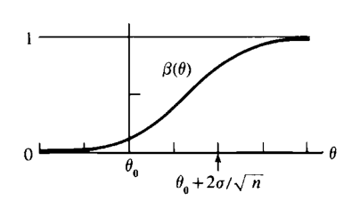
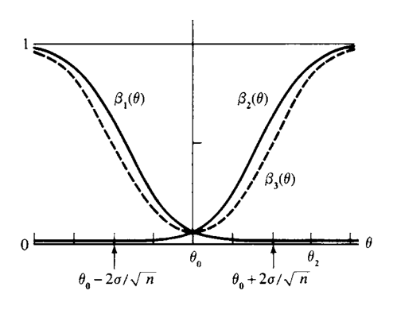
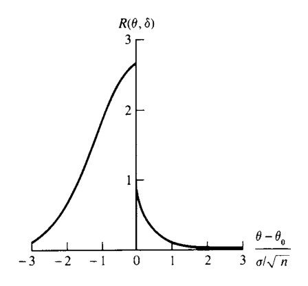

8 가설검정
“It is a mistake to confound strangeness with mystery.”
— Sherlock Holmes, A Study in Scarlet
- 7장에서는 점추정(point estimation)을 다루었다.
- 이 장에서는 또 다른 통계적 추론 방법인 가설검정(hypothesis testing)을 다룬다.
- 가설검정도 점추정과 마찬가지로 두 가지 과제를 포함한다.
- 좋은 검정절차를 어떻게 찾을 것인가?
- 찾은 검정절차가 좋은지 어떻게 평가할 것인가?
- 따라서 이 장은 크게 두 부분으로 나뉜다.
- 8.2절: 검정절차를 찾는 방법
- 8.3절: 검정절차를 평가하는 방법
8.1 도입
8.1.1 통계적 가설
8.1.1.1 정의
- 가설(hypothesis)은 모집단 모수에 대한 진술이다.
- 여기서 중요한 점은 가설이 표본 자체에 대한 진술이 아니라, 표본이 나온 모집단 또는 모수에 대한 진술이라는 것이다.
8.1.1.2 정의
- 가설검정 문제에서 서로 보완적인 두 가설을 다음과 같이 부른다.
- 귀무가설(null hypothesis): \(H_0\)
- 대립가설(alternative hypothesis): \(H_1\)
- 모수가 $ heta$이고 모수공간이 $ heta\in\Theta$라고 하자.
- 일반적으로 가설검정은 다음 형태로 쓸 수 있다.
\[ H_0:\theta\in\Theta_0 \qquad\text{versus}\qquad H_1:\theta\in\Theta_0^c. \]
- 여기서 \(\Theta_0\)는 모수공간의 부분집합이고, \(\Theta_0^c\)는 그 여집합이다.
8.1.2 예: 혈압약 효과 검정
- \(\theta\)가 어떤 약을 복용한 뒤 환자의 혈압 평균 변화량이라고 하자.
- 약이 평균적으로 혈압에 아무 효과가 없는지를 검정하려면 다음과 같이 쓸 수 있다.
\[ H_0:\theta=0 \qquad\text{versus}\qquad H_1:\theta\ne0. \]
- 귀무가설 \(H_0\)는 “약은 평균적으로 혈압에 영향을 주지 않는다”는 진술이다.
- 대립가설 \(H_1\)는 “약은 평균적으로 혈압에 어떤 영향을 준다”는 진술이다.
- 이처럼 \(H_0\)가 보통 “효과 없음” 또는 “차이 없음”을 나타내는 경우가 많아 null hypothesis라는 이름이 붙었다.
8.1.3 예: acceptance sampling
- \(\theta\)가 어떤 공급자가 생산한 제품 중 불량품 비율이라고 하자.
- 허용 가능한 최대 불량률을 \(\theta_0\)라 하면, 소비자는 다음 가설을 검정할 수 있다.
\[ H_0:\theta\ge\theta_0 \qquad\text{versus}\qquad H_1:\theta<\theta_0. \]
- 이때 \(H_0\)는 “불량률이 너무 높다”는 진술이다.
- 제품의 품질이 일정 기준을 만족하는지 판단하는 이런 문제를 acceptance sampling problem이라고 한다.
8.1.4 가설검정 절차
8.1.4.1 정의
- 가설검정 절차(hypothesis testing procedure) 또는 가설검정(hypothesis test)은 다음을 지정하는 규칙이다.
- 어떤 표본값이 관측되면 \(H_0\)를 참으로 받아들일 것인가?
- 어떤 표본값이 관측되면 \(H_0\)를 기각하고 \(H_1\)을 참으로 받아들일 것인가?
- \(H_0\)를 기각하는 표본공간의 부분집합을 기각역(rejection region) 또는 임계역(critical region)이라고 한다.
- 기각역의 여집합은 수용역(acceptance region)이라고 한다.
8.1.5 “기각한다”와 “받아들인다”의 표현
- 철학적으로는 다음 표현들 사이에 미묘한 차이가 있다.
- \(H_0\)를 기각한다.
- \(H_1\)을 받아들인다.
- \(H_0\)를 받아들인다.
- \(H_0\)를 기각하지 못한다.
- 예를 들어 “\(H_0\)를 기각하지 못한다”는 말은 \(H_0\)가 참임을 적극적으로 주장한다기보다, \(H_0\)를 기각할 충분한 증거가 없다는 뜻에 가깝다.
- 이 장에서는 의사결정 관점에서 둘 중 하나의 행동을 선택한다고 본다.
- \(H_0\)를 주장하는 행동
- \(H_1\)을 주장하는 행동
8.1.6 검정통계량
- 대부분의 가설검정은 표본의 함수인 검정통계량(test statistic)을 통해 정의된다.
- 검정통계량을
\[ W(X_1,\ldots,X_n)=W(X) \]
라고 쓰자.
- 예를 들어 “표본평균 \(\bar X\)가 3보다 크면 \(H_0\)를 기각한다”라는 검정에서는
\[ W(X)=\bar X \]
이고 기각역은
\[ \{(x_1,\ldots,x_n):\bar x>3\} \]
이다.
8.2 검정을 찾는 방법
- 이 절에서는 검정절차를 찾는 네 가지 방법을 다룬다.
- 가능도비 검정
- 베이즈 검정
- Union-intersection test
- Intersection-union test
- 이 방법들은 서로 다른 상황에서 유용하고, 문제의 서로 다른 구조를 활용한다.
8.3 가능도비 검정
- 가능도비 검정(likelihood ratio test, LRT)은 최대가능도추정과 밀접하게 연결된다.
- \(X_1,\ldots,X_n\)이 pdf 또는 pmf \(f(x\mid\theta)\)에서 나온 랜덤표본이라고 하자.
- 가능도함수는
\[ L(\theta\mid x_1,\ldots,x_n) =L(\theta\mid x) =f(x\mid\theta) =\prod_{i=1}^{n}f(x_i\mid\theta). \]
8.3.1 정의: 가능도비 검정통계량
- \(H_0:\theta\in\Theta_0\) 대 \(H_1:\theta\in\Theta_0^c\)를 검정한다고 하자.
- 가능도비 검정통계량은
\[ \lambda(x) = \frac{\sup_{\Theta_0}L(\theta\mid x)} {\sup_{\Theta}L(\theta\mid x)}. \]
- 가능도비 검정은 다음 형태의 기각역을 갖는 검정이다.
\[ \{x:\lambda(x)\le c\}, \qquad 0\le c\le1. \]
8.3.2 LRT의 직관
- 분모는 전체 모수공간에서 관측자료를 가장 그럴듯하게 만드는 최대가능도이다.
- 분자는 귀무가설이 허용하는 모수값들 중에서 관측자료를 가장 그럴듯하게 만드는 최대가능도이다.
- \(\lambda(x)\)가 작다는 것은 다음을 의미한다.
- \(H_0\) 안에서는 자료가 그다지 그럴듯하지 않다.
- 그러나 전체 모수공간, 특히 \(H_1\) 쪽에서는 자료가 훨씬 그럴듯할 수 있다.
- 따라서 작은 \(\lambda(x)\)는 \(H_0\)에 불리한 증거이다.
8.3.3 restricted MLE와 unrestricted MLE
- 전체 모수공간 \(\Theta\)에서의 MLE를 \(\hat\theta\)라고 하자.
- 귀무가설 공간 \(\Theta_0\)로 제한하여 얻은 MLE를 \(\hat\theta_0\)라고 하자.
- 그러면 가능도비는
\[ \lambda(x)=\frac{L(\hat\theta_0\mid x)}{L(\hat\theta\mid x)}. \]
- 즉, LRT는 “귀무가설 하에서의 최선”과 “전체 모형에서의 최선”을 비교한다.
8.3.4 예제: 정규분포 평균에 대한 LRT
- \(X_1,\ldots,X_n\)이 \(N(\theta,1)\)에서 나온 랜덤표본이라고 하자.
- 다음을 검정한다.
\[ H_0:\theta=\theta_0 \qquad\text{versus}\qquad H_1:\theta\ne\theta_0. \]
- \(H_0\)에는 모수값이 하나뿐이므로 분자는 \(L(\theta_0\mid x)\)이다.
- 전체 모수공간에서의 MLE는
\[ \hat\theta=\bar X. \]
- 따라서
\[ \lambda(x) = \frac{(2\pi)^{-n/2}\exp\left[-\sum_{i=1}^{n}(x_i-\theta_0)^2/2\right]} {(2\pi)^{-n/2}\exp\left[-\sum_{i=1}^{n}(x_i-\bar x)^2/2\right]}. \tag{8.2.1} \]
- 다음 항등식을 사용한다.
\[ \sum_{i=1}^{n}(x_i-\theta_0)^2 = \sum_{i=1}^{n}(x_i-\bar x)^2+n(\bar x-\theta_0)^2. \]
- 그러면
\[ \lambda(x)=\exp\left[-\frac{n(\bar x-\theta_0)^2}{2}\right]. \tag{8.2.2} \]
- LRT는 \(\lambda(x)\)가 작으면 기각한다.
- 이는 다음과 동치이다.
\[ |\bar x-\theta_0| \ge \sqrt{\frac{-2\log c}{n}}. \]
- 결론:
- 이 문제에서 LRT는 표본평균이 가설값 \(\theta_0\)에서 충분히 멀리 떨어져 있으면 \(H_0\)를 기각한다.
8.3.5 예제: 이동된 지수분포의 LRT
- \(X_1,\ldots,X_n\)이 다음 pdf에서 나온 랜덤표본이라고 하자.
\[ f(x\mid\theta)= \begin{cases} e^{-(x-\theta)}, & x\ge\theta,\\ 0, & x<\theta, \end{cases} \qquad -\infty<\theta<\infty. \]
- 가능도함수는
\[ L(\theta\mid x)= \begin{cases} e^{-\sum_i x_i+n\theta}, & \theta\le x_{(1)},\\ 0, & \theta>x_{(1)}, \end{cases} \]
여기서
\[ x_{(1)}=\min_i x_i. \]
- 다음을 검정한다.
\[ H_0:\theta\le\theta_0 \qquad\text{versus}\qquad H_1:\theta>\theta_0. \]
- \(L(\theta\mid x)\)는 \(\theta\le x_{(1)}\)에서 증가함수이다.
- 따라서 전체 모수공간에서의 최대값은 \(\theta=x_{(1)}\)에서 얻어진다.
- 귀무가설 하에서는 두 경우가 생긴다.
- \(x_{(1)}\le\theta_0\)이면 unrestricted maximum과 restricted maximum이 같다.
- \(x_{(1)}>\theta_0\)이면 restricted maximum은 \(\theta=\theta_0\)에서 얻어진다.
- 가능도비 검정통계량은
\[ \lambda(x)= \begin{cases} 1, & x_{(1)}\le\theta_0,\\ e^{-n(x_{(1)}-\theta_0)}, & x_{(1)}>\theta_0. \end{cases} \]

- 따라서 LRT의 기각역은
\[ \left\{x:x_{(1)}\ge\theta_0-\frac{\log c}{n}\right\} \]
형태이다. - 이 기각역은 표본 전체가 아니라 충분통계량 \(X_{(1)}\)만을 통해 결정된다.
8.3.6 LRT와 충분통계량
8.3.6.1 정리
- \(T(X)\)가 \(\theta\)에 대한 충분통계량이라고 하자.
- \(X\) 전체를 이용한 LRT 통계량을 \(\lambda(x)\), \(T\)의 분포를 이용한 LRT 통계량을 \(\lambda^*(t)\)라고 하자.
- 그러면 모든 표본점 \(x\)에 대해
\[ \lambda^*(T(x))=\lambda(x). \]
- 이유:
- 충분통계량이면 Factorization Theorem에 의해
\[ f(x\mid\theta)=g(T(x)\mid\theta)h(x) \]
로 쓸 수 있다. - 가능도비에서 \(h(x)\)는 분자와 분모에서 서로 약분된다.
- 결론:
- 충분통계량이 있으면 LRT는 그 충분통계량만으로 구성해도 표본 전체를 사용한 것과 같다.
8.3.7 예제: LRT와 충분성
- 예제 8.2.2에서 \(\bar X\)는 \(\theta\)에 대한 충분통계량이다.
- 따라서 \(\bar X\sim N(\theta,1/n)\)의 가능도만 사용해도 같은 LRT를 얻는다.
- 예제 8.2.3에서는 \(X_{(1)}\)이 \(\theta\)에 대한 충분통계량이다.
- 따라서 \(X_{(1)}\)의 pdf만 사용해도 같은 LRT를 얻는다.
8.3.8 예제: 미지의 분산을 가진 정규 LRT
- \(X_1,\ldots,X_n\)이 \(N(\mu,\sigma^2)\)에서 나온 랜덤표본이라고 하자.
- 관심은 \(\mu\)에 있고, \(\sigma^2\)는 nuisance parameter이다.
- 다음을 검정한다.
\[ H_0:\mu\le\mu_0 \qquad\text{versus}\qquad H_1:\mu>\mu_0. \]
- 가능도비는
\[ \lambda(x)= \frac{ \max_{\{\mu,\sigma^2:\mu\le\mu_0,\;\sigma^2\ge0\}}L(\mu,\sigma^2\mid x) }{ \max_{\{\mu,\sigma^2:-\infty<\mu<\infty,\;\sigma^2\ge0\}}L(\mu,\sigma^2\mid x) }. \]
- unrestricted MLE는
\[ \hat\mu=\bar X, \qquad \hat\sigma^2=\frac1n\sum_{i=1}^{n}(X_i-\bar X)^2. \]
- 만약 \(\hat\mu\le\mu_0\)이면 restricted maximum과 unrestricted maximum이 같다.
- 만약 \(\hat\mu>\mu_0\)이면 restricted maximum은 \(\mu=\mu_0\)에서 얻어진다.
- 대수적 정리를 하면 이 LRT는 Student의 \(t\) 통계량에 기반한 검정과 동치이다.
8.4 베이즈 검정
- 베이즈 모형에서는 표본분포 \(f(x\mid\theta)\)뿐 아니라 사전분포 \(\pi(\theta)\)도 포함한다.
- 표본을 관측한 뒤 베이즈 정리는 사후분포를 만든다.
\[ \pi(\theta\mid x). \]
- 베이즈 가설검정에서는 사후분포를 사용해 다음 확률을 계산할 수 있다.
\[ P(\theta\in\Theta_0\mid x)=P(H_0\text{ is true}\mid x), \]
\[ P(\theta\in\Theta_0^c\mid x)=P(H_1\text{ is true}\mid x). \]
8.4.1 고전적 관점과 베이즈 관점의 차이
- 고전적 관점에서는 \(\theta\)가 고정된 미지의 값이다.
- 따라서 \(H_0\)는 실제로 참이거나 거짓이다.
- 표본을 관측한 뒤 \(P(H_0\text{ is true}\mid x)\) 같은 확률은 고전적 관점에서는 의미 있게 사용되지 않는다.
- 베이즈 관점에서는 \(\theta\) 자체가 확률분포를 가지므로, 사후확률이 의미 있는 추론량이 된다.
8.4.2 베이즈 검정 규칙의 예
- 다음 규칙을 사용할 수 있다.
- \(P(\theta\in\Theta_0\mid X)\ge P(\theta\in\Theta_0^c\mid X)\)이면 \(H_0\)를 받아들인다.
- 그렇지 않으면 \(H_0\)를 기각한다.
- 이는 다음 기각역을 갖는 검정과 같다.
\[ \left\{x:P(\theta\in\Theta_0^c\mid x)>\frac12\right\}. \]
- 또는 더 보수적으로 \(P(\theta\in\Theta_0^c\mid x)>0.99\)일 때만 기각할 수도 있다.
8.4.3 예제: 정규 베이즈 검정
- \(X_1,\ldots,X_n\)이 iid \(N(\theta,\sigma^2)\)이고, 사전분포가
\[ \theta\sim N(\mu,\tau^2) \]
라고 하자. - \(\sigma^2,\mu,\tau^2\)는 알려져 있다고 한다. - 다음을 검정한다.
\[ H_0:\theta\le\theta_0 \qquad\text{versus}\qquad H_1:\theta>\theta_0. \]
- 사후분포는 정규분포이며 평균과 분산은
\[ E(\theta\mid x) = \frac{n\tau^2\bar x+\sigma^2\mu}{n\tau^2+\sigma^2}, \]
\[ Var(\theta\mid x) = \frac{\sigma^2\tau^2}{n\tau^2+\sigma^2}. \]
- \(P(\theta\le\theta_0\mid X)\ge1/2\)이면 \(H_0\)를 받아들이는 규칙을 쓰면, 정규분포의 대칭성 때문에 이는 사후평균이 \(\theta_0\) 이하라는 조건과 같다.
- 따라서 \(H_0\)를 받아들이는 조건은
\[ \bar X\le \theta_0+\frac{\sigma^2(\theta_0-\mu)}{n\tau^2}. \]
- 특히 \(\mu=\theta_0\)이면 사전적으로 두 가설에 같은 확률을 주는 경우이고, 이때 규칙은 단순히
\[ \bar X\le\theta_0 \]
이면 \(H_0\)를 받아들이는 것이 된다.
8.5 Union-intersection 및 intersection-union 검정
- 복잡한 귀무가설을 여러 단순한 가설의 조합으로 표현할 수 있을 때가 있다.
- 이때 각각의 단순한 검정을 결합해 전체 검정을 만들 수 있다.
8.5.1 Union-intersection test
- 귀무가설이 교집합 형태로 표현된다고 하자.
\[ H_0:\theta\in\bigcap_{\gamma\in\Gamma}\Theta_\gamma. \tag{8.2.3} \]
- 각 \(\gamma\)에 대해
\[ H_{0\gamma}:\theta\in\Theta_\gamma \qquad\text{versus}\qquad H_{1\gamma}:\theta\in\Theta_\gamma^c \]
를 검정하는 검정이 있다고 하자. - 그 기각역을
\[ \{x:T_\gamma(x)\in R_\gamma\} \]
라고 하면, union-intersection test의 기각역은
\[ \bigcup_{\gamma\in\Gamma}\{x:T_\gamma(x)\in R_\gamma\}. \tag{8.2.4} \]
- 직관:
- \(H_0\)는 모든 \(H_{0\gamma}\)가 참일 때만 참이다.
- 따라서 하나라도 기각되면 전체 \(H_0\)도 기각된다.
- 만약 각 기각역이
\[ \{x:T_\gamma(x)>c\} \]
형태이고 \(c\)가 \(\gamma\)에 의존하지 않으면 전체 검정통계량은
\[ T(x)=\sup_{\gamma\in\Gamma}T_\gamma(x) \]
로 쓸 수 있다.
8.5.2 예제: 정규분포의 union-intersection 검정
- \(X_1,\ldots,X_n\)이 \(N(\mu,\sigma^2)\)에서 나온 랜덤표본이라고 하자.
- 다음을 검정한다.
\[ H_0:\mu=\mu_0 \qquad\text{versus}\qquad H_1:\mu\ne\mu_0. \]
- \(H_0\)는 두 집합의 교집합으로 쓸 수 있다.
\[ \{\mu:\mu\le\mu_0\}\cap\{\mu:\mu\ge\mu_0\}. \]
- 왼쪽 단측검정과 오른쪽 단측검정을 결합하면 기각역은
\[ \frac{\bar X-\mu_0}{S/\sqrt n}\ge t_L \quad\text{or}\quad \frac{\bar X-\mu_0}{S/\sqrt n}\le t_U \]
이 된다. - 보통 \(t_L=-t_U\)로 잡으면
\[ \frac{|\bar X-\mu_0|}{S/\sqrt n}\ge t_L \]
형태가 된다. - 이는 잘 알려진 양측 \(t\) 검정(two-sided t test)이다.
8.5.3 Intersection-union test
- 귀무가설이 합집합 형태로 표현된다고 하자.
\[ H_0:\theta\in\bigcup_{\gamma\in\Gamma}\Theta_\gamma. \tag{8.2.5} \]
- 각 \(H_{0\gamma}:\theta\in\Theta_\gamma\)에 대한 검정의 기각역이 \(\{x:T_\gamma(x)\in R_\gamma\}\)이면, intersection-union test의 기각역은
\[ \bigcap_{\gamma\in\Gamma}\{x:T_\gamma(x)\in R_\gamma\}. \tag{8.2.6} \]
- 직관:
- \(H_0\)는 어느 하나의 \(H_{0\gamma}\)라도 참이면 참이다.
- 따라서 전체 \(H_0\)를 기각하려면 모든 개별 귀무가설을 기각해야 한다.
- 만약 각 기각역이
\[ \{x:T_\gamma(x)\ge c\} \]
형태라면 전체 검정통계량은
\[ \inf_{\gamma\in\Gamma}T_\gamma(x) \]
가 된다.
8.5.4 예제: Acceptance sampling
- 직물 품질을 두 모수로 평가한다고 하자.
- \(\theta_1\): 평균 인장강도
- \(\theta_2\): 가연성 시험을 통과할 확률
- 기준이 다음과 같다고 하자.
- 평균 인장강도는 50파운드를 넘어야 한다.
- 가연성 통과 확률은 0.95를 넘어야 한다.
- 제품은 두 기준을 모두 만족할 때만 적합하다.
- 따라서 검정은
\[ H_0:\{\theta_1\le50\text{ or }\theta_2\le0.95\} \qquad\text{versus}\qquad H_1:\{\theta_1>50\text{ and }\theta_2>0.95\}. \]
- \(H_0\)가 합집합 형태이므로 intersection-union test가 자연스럽다.
- 인장강도 표본 \(X_1,\ldots,X_n\)에 대해서는 단측 \(t\) 검정을 사용하고, 가연성 시험 결과 \(Y_1,\ldots,Y_m\)에 대해서는 Bernoulli LRT를 사용한다.
- 전체 기각역은
\[ \left\{(x,y): \frac{\bar x-50}{s/\sqrt n}>t \quad\text{and}\quad \sum_{i=1}^{m}y_i>b \right\} \]
이다. - 즉, 제품을 적합하다고 판단하려면 두 개별 기준 모두를 통과해야 한다.
8.6 검정을 평가하는 방법
- 가설검정은 표본을 보고 \(H_0\) 또는 \(H_1\) 중 하나를 선택한다.
- 따라서 잘못된 결정을 내릴 수 있다.
- 검정의 성능은 보통 이런 오류확률을 통해 평가된다.
8.7 오류확률과 검정력 함수
8.7.1 두 종류의 오류
- \(H_0:\theta\in\Theta_0\) 대 \(H_1:\theta\in\Theta_0^c\)를 검정한다고 하자.
| 실제 상태 | \(H_0\)를 받아들임 | \(H_0\)를 기각함 |
|---|---|---|
| \(H_0\) 참 | 올바른 결정 | 제1종 오류 |
| \(H_1\) 참 | 제2종 오류 | 올바른 결정 |
- 제1종 오류(Type I Error):
- 실제로 \(\theta\in\Theta_0\)인데 \(H_0\)를 기각하는 오류이다.
- 제2종 오류(Type II Error):
- 실제로 \(\theta\in\Theta_0^c\)인데 \(H_0\)를 받아들이는 오류이다.
8.7.2 검정력 함수
8.7.2.1 정의
- 기각역이 \(R\)인 검정의 검정력 함수(power function)는
\[ \beta(\theta)=P_\theta(X\in R) \]
로 정의된다.
- \(\theta\in\Theta_0\)이면 \(\beta(\theta)\)는 제1종 오류확률이다.
- \(\theta\in\Theta_0^c\)이면 \(1-\beta(\theta)\)가 제2종 오류확률이다.
- 이상적인 검정력 함수는 다음과 같다.
- \(\theta\in\Theta_0\)에서는 0
- \(\theta\in\Theta_0^c\)에서는 1
- 현실적으로는 보통 이 이상적인 형태를 정확히 달성할 수 없다.
8.7.3 예제: 이항분포 검정력 함수
- \(X\sim Binomial(5,\theta)\)라고 하자.
- 다음을 검정한다.
\[ H_0:\theta\le\frac12 \qquad\text{versus}\qquad H_1:\theta>\frac12. \]
- 첫 번째 검정은 모든 시행이 성공일 때만 \(H_0\)를 기각한다.
- 즉, 기각역은 \(R_1=\{5\}\)이고 검정력 함수는
\[ \beta_1(\theta)=P_\theta(X=5)=\theta^5. \]
- 이 검정은 제1종 오류확률이 작지만, \(\theta>1/2\)에서도 검정력이 낮아 제2종 오류가 클 수 있다.
- 두 번째 검정은 \(X=3,4,5\)일 때 \(H_0\)를 기각한다.
- 검정력 함수는
\[ \beta_2(\theta) =P_\theta(X=3,4,5) \]
\[ = \binom53\theta^3(1-\theta)^2 + \binom54\theta^4(1-\theta) + \binom55\theta^5. \]

- 두 번째 검정은 대립가설 영역에서 검정력이 더 크지만, 귀무가설 영역에서도 기각확률이 더 커져 제1종 오류확률도 증가한다.
- 검정 선택은 어떤 오류구조가 더 받아들일 만한지에 달려 있다.
8.7.4 예제: 정규분포 검정력 함수
- \(X_1,\ldots,X_n\)이 \(N(\theta,\sigma^2)\)에서 나온 랜덤표본이고 \(\sigma^2\)는 알려져 있다고 하자.
- 다음을 검정한다.
\[ H_0:\theta\le\theta_0 \qquad\text{versus}\qquad H_1:\theta>\theta_0. \]
- LRT는 다음 조건에서 기각한다.
\[ \frac{\bar X-\theta_0}{\sigma/\sqrt n}>c. \]
- 검정력 함수는
\[ \begin{aligned} \beta(\theta) &=P_\theta\left(\frac{\bar X-\theta_0}{\sigma/\sqrt n}>c\right)\\ &=P\left(Z>c+\frac{\theta_0-\theta}{\sigma/\sqrt n}\right), \end{aligned} \]
여기서 \(Z\sim N(0,1)\)이다.
- \(\theta\)가 증가하면 오른쪽 꼬리확률이 증가하므로 \(\beta(\theta)\)는 증가함수이다.
- 또한
\[ \lim_{\theta\to-\infty}\beta(\theta)=0, \qquad \lim_{\theta\to\infty}\beta(\theta)=1. \]
- \(P(Z>c)=\alpha\)이면
\[ \beta(\theta_0)=\alpha. \]

8.7.5 예제: 표본크기 선택
- 예제 8.3.3에서 제1종 오류확률을 최대 0.1로, 그리고 \(\theta\ge\theta_0+\sigma\)일 때 제2종 오류확률을 최대 0.2로 만들고 싶다고 하자.
- 즉,
\[ \beta(\theta_0)=0.1, \qquad \beta(\theta_0+\sigma)=0.8 \]
이 되도록 \(c\)와 \(n\)을 고른다. - \(P(Z>1.28)=0.1\)이므로 \(c=1.28\)로 둔다. - 또한
\[ \beta(\theta_0+\sigma)=P(Z>1.28-\sqrt n)=0.8. \]
- \(P(Z>-0.84)=0.8\)이므로
\[ 1.28-\sqrt n=-0.84 \]
이고
\[ n=4.49. \]
- 표본크기는 정수여야 하므로 \(n=5\)를 선택한다.
8.7.6 크기와 수준
8.7.6.1 정의
- 검정력 함수가 \(\beta(\theta)\)인 검정이
\[ \sup_{\theta\in\Theta_0}\beta(\theta)=\alpha \]
을 만족하면 size \(\alpha\) 검정이라고 한다.
8.7.6.2 정의
- 검정력 함수가 \(\beta(\theta)\)인 검정이
\[ \sup_{\theta\in\Theta_0}\beta(\theta)\le\alpha \]
을 만족하면 level \(\alpha\) 검정이라고 한다.
- 모든 size \(\alpha\) 검정은 level \(\alpha\) 검정이다.
- 하지만 level \(\alpha\) 검정이 반드시 size \(\alpha\) 검정인 것은 아니다.
- 실제 복잡한 문제에서는 정확히 size \(\alpha\) 검정을 만들기 어려워 level \(\alpha\) 검정으로 만족해야 할 수 있다.
8.7.7 예제: LRT의 크기
- 예제 8.2.2의 정규 양측검정에서 \(\Theta_0\)는 한 점 \(\theta_0\)뿐이다.
- \(\theta=\theta_0\)일 때
\[ \sqrt n(\bar X-\theta_0)\sim N(0,1). \]
- 따라서 size \(\alpha\) LRT는
\[ \text{reject }H_0 \quad\text{if}\quad |\bar X-\theta_0|\ge \frac{z_{\alpha/2}}{\sqrt n}, \]
여기서
\[ P(Z\ge z_{\alpha/2})=\frac\alpha2. \]
- 예제 8.2.3의 이동 지수분포에서는 LRT가 \(X_{(1)}\ge c\)일 때 기각한다.
- \(c\)를
\[ c=\theta_0+\frac{-\log\alpha}{n} \]
로 잡으면
\[ P_{\theta_0}(X_{(1)}\ge c)=\alpha \]
이 되어 size \(\alpha\) 검정이 된다.
8.7.8 컷오프 표기
- \(z_\alpha\)는
\[ P(Z>z_\alpha)=\alpha, \qquad Z\sim N(0,1) \]
를 만족하는 점이다. - 비슷하게 \(t_{n-1,\alpha}\), \(\chi^2_{p,1-\alpha}\) 등의 표기를 사용한다.
8.7.9 불편검정
8.7.9.1 정의
- 검정력 함수 \(\beta(\theta)\)를 갖는 검정이 모든 \(\theta'\in\Theta_0^c\)와 \(\theta''\in\Theta_0\)에 대해
\[ \beta(\theta')\ge\beta(\theta'') \]
를 만족하면 불편검정(unbiased test)이라고 한다. - 즉, 대립가설이 참일 때의 기각확률이 귀무가설이 참일 때보다 작아서는 안 된다.
8.8 최강력 검정
8.8.1 UMP 검정
8.8.1.1 정의 8.3.11
- \(C\)가 \(H_0:\theta\in\Theta_0\) 대 \(H_1:\theta\in\Theta_0^c\)에 대한 검정들의 한 클래스라고 하자.
- 검정력 함수가 \(\beta(\theta)\)인 어떤 검정이 다음을 만족하면 uniformly most powerful, UMP class \(C\) test라고 한다.
\[ \beta(\theta)\ge\beta'(\theta) \]
for every \(\theta\in\Theta_0^c\) and every power function \(\beta'(\theta)\) of a test in \(C\).
- 이 절에서는 보통 \(C\)를 모든 level \(\alpha\) 검정의 클래스라고 둔다.
- 그러면 UMP level \(\alpha\) 검정은 제1종 오류확률을 \(\alpha\) 이하로 제한한 검정들 중에서 모든 대립모수값에 대해 검정력이 가장 큰 검정이다.
8.8.2 Neyman-Pearson Lemma
8.8.2.1 정리
- 단순가설
\[ H_0:\theta=\theta_0 \qquad\text{versus}\qquad H_1:\theta=\theta_1 \]
을 검정한다고 하자. - \(\theta_i\)에 해당하는 pdf 또는 pmf를 \(f(x\mid\theta_i)\)라고 하자. - 기각역 \(R\)이 어떤 \(k\ge0\)에 대해 다음을 만족한다고 하자.
\[ x\in R \quad\text{if}\quad f(x\mid\theta_1)>k f(x\mid\theta_0), \]
\[ x\in R^c \quad\text{if}\quad f(x\mid\theta_1)<k f(x\mid\theta_0), \tag{8.3.1} \]
그리고
\[ \alpha=P_{\theta_0}(X\in R). \tag{8.3.2} \]
- 그러면 다음이 성립한다.
- 충분성: 식 (8.3.1), (8.3.2)를 만족하는 검정은 UMP level \(\alpha\) 검정이다.
- 필요성: \(k>0\)인 검정이 존재하면, 모든 UMP level \(\alpha\) 검정은 거의 어디서나 식 (8.3.1)을 만족한다.
- 핵심 직관:
- \(H_1\) 아래에서 \(H_0\)보다 훨씬 더 그럴듯한 표본값을 기각역에 넣는 것이 최적이다.
- 즉, likelihood ratio \(f(x\mid\theta_1)/f(x\mid\theta_0)\)가 큰 곳에서 기각한다.
8.8.3 충분통계량을 이용한 Neyman-Pearson Lemma
8.8.3.1 따름정리
- \(T(X)\)가 \(\theta\)에 대한 충분통계량이라고 하자.
- \(T\)의 pdf 또는 pmf를 \(g(t\mid\theta_i)\)라고 하자.
- \(T\)에 기반한 기각역 \(S\)가
\[ t\in S \quad\text{if}\quad g(t\mid\theta_1)>kg(t\mid\theta_0), \]
\[ t\in S^c \quad\text{if}\quad g(t\mid\theta_1)<kg(t\mid\theta_0) \tag{8.3.4} \]
을 만족하고
\[ \alpha=P_{\theta_0}(T\in S) \tag{8.3.5} \]
이면, \(T\)에 기반한 검정은 UMP level \(\alpha\) 검정이다.
8.8.4 예제: 이항분포의 UMP 검정
- \(X\sim Binomial(2,\theta)\)라고 하자.
- 다음을 검정한다.
\[ H_0:\theta=\frac12 \qquad\text{versus}\qquad H_1:\theta=\frac34. \]
- likelihood ratio 값은
\[ \frac{f(0\mid3/4)}{f(0\mid1/2)}=\frac14, \]
\[ \frac{f(1\mid3/4)}{f(1\mid1/2)}=\frac34, \]
\[ \frac{f(2\mid3/4)}{f(2\mid1/2)}=\frac94. \]
- \(3/4<k<9/4\)로 잡으면 \(X=2\)에서만 \(H_0\)를 기각하는 검정이 UMP level \(\alpha=1/4\) 검정이다.
- \(1/4<k<3/4\)로 잡으면 \(X=1\) 또는 \(2\)에서 기각하는 검정이 UMP level \(\alpha=3/4\) 검정이다.
- 이산분포에서는 원하는 모든 \(\alpha\)를 정확히 달성하지 못할 수 있다.
8.8.5 예제: 정규분포의 UMP 검정
- \(X_1,\ldots,X_n\)이 \(N(\theta,\sigma^2)\)에서 나온 랜덤표본이고 \(\sigma^2\)는 알려져 있다고 하자.
- 다음 단순가설을 검정한다.
\[ H_0:\theta=\theta_0 \qquad\text{versus}\qquad H_1:\theta=\theta_1, \qquad \theta_0>\theta_1. \]
- 충분통계량 \(\bar X\)를 사용하면 Neyman-Pearson Lemma에 의해 기각역은
\[ \bar X<c \]
형태가 된다. - size \(\alpha\)를 원하면
\[ c=\theta_0-\frac{\sigma z_\alpha}{\sqrt n} \]
로 잡는다. - 즉,
\[ \text{reject }H_0 \quad\text{if}\quad \bar X<\theta_0-\frac{\sigma z_\alpha}{\sqrt n}. \]
8.8.6 단순가설과 복합가설
- 하나의 모수값만 지정하는 가설을 단순가설(simple hypothesis)이라고 한다.
- 여러 모수값을 허용하는 가설을 복합가설(composite hypothesis)이라고 한다.
- Neyman-Pearson Lemma는 단순가설에 대한 결과지만, 복합가설의 UMP 검정을 찾는 데도 활용된다.
8.8.7 단조가능도비
8.8.7.1 정의
- \(T\)의 분포족 \(\{g(t\mid\theta):\theta\in\Theta\}\)가 다음 성질을 가지면 monotone likelihood ratio, MLR를 가진다고 한다.
- 모든 \(\theta_2>\theta_1\)에 대해
\[ \frac{g(t\mid\theta_2)}{g(t\mid\theta_1)} \]
가 \(t\)의 단조함수이다.
- 정규분포의 평균모형, 포아송분포, 이항분포 등 많은 분포족이 MLR을 가진다.
- 정규적인 지수족
\[ g(t\mid\theta)=h(t)c(\theta)e^{w(\theta)t} \]
에서 \(w(\theta)\)가 비감소함수이면 MLR을 가진다.
8.8.8 Karlin-Rubin 정리
8.8.8.1 정리
- 다음을 검정한다고 하자.
\[ H_0:\theta\le\theta_0 \qquad\text{versus}\qquad H_1:\theta>\theta_0. \]
- \(T\)가 \(\theta\)에 대한 충분통계량이고, \(T\)의 분포족 \(\{g(t\mid\theta) :\theta\in\Theta\}\)가 MLR을 가진다고 하자.
- 그러면 임의의 \(t_0\)에 대해
\[ \text{reject }H_0\quad\text{if and only if}\quad T>t_0 \]
인 검정은 UMP level \(\alpha\) 검정이다. - 여기서
\[ \alpha=P_{\theta_0}(T>t_0). \]
- 반대로 \(H_0:\theta\ge\theta_0\) 대 \(H_1:\theta<\theta_0\)에서는 \(T<t_0\) 형태의 검정이 UMP가 된다.
8.8.9 예제: 정규 단측검정
- \(X_1,\ldots,X_n\)이 \(N(\theta,\sigma^2)\)에서 나온 표본이고 \(\sigma^2\)는 알려져 있다고 하자.
- 다음을 검정한다.
\[ H_0:\theta\ge\theta_0 \qquad\text{versus}\qquad H_1:\theta<\theta_0. \]
- \(\bar X\)는 충분통계량이고 그 분포족은 MLR을 가진다.
- 따라서
\[ \text{reject }H_0 \quad\text{if}\quad \bar X<\theta_0-\frac{\sigma z_\alpha}{\sqrt n} \]
인 검정은 UMP level \(\alpha\) 검정이다.
8.8.10 UMP 검정이 존재하지 않는 경우
- 모든 문제에서 UMP level \(\alpha\) 검정이 존재하는 것은 아니다.
- 특히 양측검정에서는 대개 모든 대립방향을 동시에 최적으로 만드는 검정이 존재하지 않는다.
8.8.11 예제: UMP 검정의 비존재
- \(X_1,\ldots,X_n\)이 iid \(N(\theta,\sigma^2)\)이고 \(\sigma^2\)는 알려져 있다고 하자.
- 다음을 검정한다.
\[ H_0:\theta=\theta_0 \qquad\text{versus}\qquad H_1:\theta\ne\theta_0. \]
- \(\theta_1<\theta_0\) 방향에서 가장 강력한 level \(\alpha\) 검정은 왼쪽 꼬리에서 기각한다.
\[ \bar X<\theta_0-\frac{\sigma z_\alpha}{\sqrt n}. \]
- 그러나 \(\theta_2>\theta_0\) 방향에서는 오른쪽 꼬리에서 기각하는 검정이 더 강력하다.
\[ \bar X>\theta_0+\frac{\sigma z_\alpha}{\sqrt n}. \]
- 한 검정이 양쪽 대립방향 모두에서 동시에 가장 강력할 수 없으므로, 이 양측검정에는 UMP level \(\alpha\) 검정이 존재하지 않는다.
8.8.12 예제: UMP unbiased 검정
- UMP가 존재하지 않을 때는 검정의 클래스를 더 제한할 수 있다.
- 예를 들어 불편검정들 중에서 UMP를 찾을 수 있다.
- 정규 양측검정에서는
\[ \text{reject }H_0 \quad\text{if}\quad \bar X>\theta_0+\frac{\sigma z_{\alpha/2}}{\sqrt n} \quad\text{or}\quad \bar X<\theta_0-\frac{\sigma z_{\alpha/2}}{\sqrt n} \]
인 검정이 UMP unbiased level \(\alpha\) 검정이다.

8.9 UIT와 IUT의 크기
- Union-intersection test와 intersection-union test는 구조가 단순하기 때문에 크기(size)를 다른 검정의 크기로 상계할 수 있다.
8.9.1 UIT의 크기
8.9.1.1 정리
- \(\Theta_0=\bigcap_{\gamma\in\Gamma}\Theta_\gamma\)라고 하자.
- 각 \(H_{0\gamma}:\theta\in\Theta_\gamma\)에 대한 LRT 통계량을 \(\lambda_\gamma(x)\)라고 하자.
- 전체 \(H_0\)에 대한 LRT 통계량을 \(\lambda(x)\)라고 하자.
- 다음을 정의한다.
\[ T(x)=\inf_{\gamma\in\Gamma}\lambda_\gamma(x). \]
- 그러면 다음이 성립한다.
- \(T(x)\ge\lambda(x)\) for every \(x\).
- \(T\)에 기반한 UIT의 검정력은 전체 LRT의 검정력보다 크지 않다.
- 전체 LRT가 level \(\alpha\)이면 UIT도 level \(\alpha\)이다.
8.9.2 예제: UIT와 LRT의 동치
- 어떤 상황에서는 \(T(x)=\lambda(x)\)가 된다.
- 예제 8.2.8의 정규 양측검정에서 두 단측 \(t\) 검정을 결합한 UIT는 전체 양측 LRT와 동치이다.
8.9.3 IUT의 크기
8.9.3.1 정리
- \(\Theta_0=\bigcup_{\gamma\in\Gamma}\Theta_\gamma\)라고 하자.
- 각 \(H_{0\gamma}\)에 대한 검정의 기각역을 \(R_\gamma\)라고 하자.
- 그 size를 \(\alpha_\gamma\)라고 하자.
- IUT의 기각역이
\[ R=\bigcap_{\gamma\in\Gamma}R_\gamma \]
이면, 이 IUT는 level
\[ \alpha=\sup_{\gamma\in\Gamma}\alpha_\gamma \]
검정이다.
- 특히 모든 개별 검정이 level \(\alpha\)이면, 그 IUT도 level \(\alpha\)이다.
8.9.3.2 정리
- 유한한 합집합 귀무가설
\[ H_0:\theta\in\bigcup_{j=1}^{k}\Theta_j \]
에서 각 \(H_{0j}\)에 대한 기각역을 \(R_j\)라고 하자. - 어떤 \(i\)에 대해 \(\theta_l\in\Theta_i\)인 모수열이 존재하여
\[ \lim_{l\to\infty}P_{\theta_l}(X\in R_i)=\alpha \]
이고, \(j\ne i\)에 대해
\[ \lim_{l\to\infty}P_{\theta_l}(X\in R_j)=1 \]
이면, IUT의 size는 정확히 \(\alpha\)이다.
8.9.4 예제: IUT의 size
- 예제 8.2.9에서 \(n=m=58\), \(t=1.672\), \(b=57\)이라고 하자.
- 각각의 개별 검정은 대략 size \(\alpha=0.05\)이다.
- 따라서 IUT는 level \(0.05\) 검정이다.
- 적절한 모수열을 잡으면 정리 8.3.24에 의해 실제 size도 \(0.05\)임을 보일 수 있다.
8.10 p-value
- 검정 결과를 보고할 때 단순히 “기각” 또는 “기각하지 않음”만 보고하면 정보가 부족하다.
- 검정의 size와 함께 결론을 보고할 수도 있지만, 더 연속적인 증거척도로 p-value를 보고하는 것이 일반적이다.
8.10.1 정의
- p-value \(p(X)\)는 모든 표본점 \(x\)에 대해
\[ 0\le p(x)\le1 \]
을 만족하는 검정통계량이다. - 작은 \(p(X)\)는 \(H_1\)이 참이라는 증거를 제공한다. - \(p(X)\)가 모든 \(\theta\in\Theta_0\)와 모든 \(0\le\alpha\le1\)에 대해
\[ P_\theta(p(X)\le\alpha)\le\alpha \tag{8.3.8} \]
를 만족하면 valid p-value라고 한다.
- valid p-value가 있으면
\[ \text{reject }H_0\quad\text{if}\quad p(X)\le\alpha \]
인 검정은 level \(\alpha\) 검정이다.
8.10.2 정리: 일반적인 p-value 구성
- 큰 값이 \(H_1\)의 증거가 되는 검정통계량 \(W(X)\)가 있다고 하자.
- 각 표본점 \(x\)에 대해
\[ p(x)=\sup_{\theta\in\Theta_0}P_\theta(W(X)\ge W(x)) \tag{8.3.9} \]
로 정의하면 \(p(X)\)는 valid p-value이다.
- 해석:
- 관측된 \(W(x)\) 이상으로 극단적인 값이 귀무가설 하에서 얼마나 자주 나오는지를 계산한다.
- 복합 귀무가설에서는 \(\Theta_0\) 전체에서 가장 보수적인 값을 취한다.
8.10.3 예제: 양측 정규 p-value
- \(X_1,\ldots,X_n\)이 \(N(\mu,\sigma^2)\)에서 나온 랜덤표본이라고 하자.
- 다음을 검정한다.
\[ H_0:\mu=\mu_0 \qquad\text{versus}\qquad H_1:\mu\ne\mu_0. \]
- LRT는 큰
\[ W(X)=\frac{|\bar X-\mu_0|}{S/\sqrt n} \]
에서 기각한다. - \(H_0\) 아래에서
\[ \frac{\bar X-\mu_0}{S/\sqrt n}\sim t_{n-1}. \]
- 따라서 양측 \(t\) 검정의 p-value는
\[ p(x)=2P\left(T_{n-1}\ge\frac{|\bar x-\mu_0|}{s/\sqrt n}\right). \]
8.10.4 예제: 단측 정규 p-value
- 이번에는
\[ H_0:\mu\le\mu_0 \qquad\text{versus}\qquad H_1:\mu>\mu_0 \]
를 검정한다. - LRT는 큰
\[ W(X)=\frac{\bar X-\mu_0}{S/\sqrt n} \]
에서 기각한다. - supremum은 경계점 \(\mu=\mu_0\)에서 얻어진다. - 따라서 p-value는
\[ p(x)=P\left(T_{n-1}\ge\frac{\bar x-\mu_0}{s/\sqrt n}\right). \]
8.10.5 조건부 p-value와 Fisher의 정확검정
- 또 다른 p-value 구성 방법은 충분통계량에 조건부로 두는 것이다.
- \(S(X)\)가 귀무모형 \(\{f(x\mid\theta):\theta\in\Theta_0\}\)에서 충분통계량이라고 하자.
- 큰 \(W(X)\)가 \(H_1\)의 증거라면
\[ p(x)=P(W(X)\ge W(x)\mid S=S(x)) \tag{8.3.10} \]
로 정의할 수 있다. - 귀무가설이 참이면 조건부분포가 \(\theta\)에 의존하지 않으므로, 이 \(p(X)\)는 valid p-value이다.
8.10.6 예제: Fisher’s Exact Test
- \(S_1\sim Binomial(n_1,p_1)\), \(S_2\sim Binomial(n_2,p_2)\)가 독립이라고 하자.
- 다음을 검정한다.
\[ H_0:p_1=p_2 \qquad\text{versus}\qquad H_1:p_1>p_2. \]
- \(H_0\) 아래에서 공통 확률을 \(p\)라고 하면
\[ f(s_1,s_2\mid p) = \binom{n_1}{s_1}\binom{n_2}{s_2} p^{s_1+s_2}(1-p)^{n_1+n_2-(s_1+s_2)}. \]
- 따라서
\[ S=S_1+S_2 \]
는 \(H_0\) 아래에서 충분통계량이다. - \(S=s\)가 주어졌을 때 \(S_1\)의 조건부분포는 초기하분포이다. - 큰 \(S_1\)이 \(p_1>p_2\)의 증거이므로 p-value는
\[ p(s_1,s_2)= \sum_{j=s_1}^{\min\{n_1,s\}} f(j\mid s), \]
여기서 \(f(j\mid s)\)는 해당 초기하분포의 pmf이다. - 이 검정이 Fisher’s Exact Test이다.
8.11 손실함수 최적성
- 검정을 의사결정 문제로 보면 점추정에서처럼 손실함수와 위험함수를 이용해 평가할 수 있다.
- 가설검정에서는 가능한 행동이 두 개뿐이다.
- \(a_0\): \(H_0\)를 받아들임
- \(a_1\): \(H_0\)를 기각함
8.11.1 0-1 손실
- 가장 단순한 손실은 올바른 결정을 하면 0, 잘못된 결정을 하면 1을 잃는 것이다.
\[ L(\theta,a_0)= \begin{cases} 0, & \theta\in\Theta_0,\\ 1, & \theta\in\Theta_0^c, \end{cases} \]
\[ L(\theta,a_1)= \begin{cases} 1, & \theta\in\Theta_0,\\ 0, & \theta\in\Theta_0^c. \end{cases} \]
8.11.2 일반화된 0-1 손실
- 두 오류의 비용이 다를 수 있다.
\[ L(\theta,a_0)= \begin{cases} 0, & \theta\in\Theta_0,\\ c_{II}, & \theta\in\Theta_0^c, \end{cases} \]
\[ L(\theta,a_1)= \begin{cases} c_I, & \theta\in\Theta_0,\\ 0, & \theta\in\Theta_0^c. \end{cases} \tag{8.3.11} \]
- \(c_I\)는 제1종 오류 비용이다.
- \(c_{II}\)는 제2종 오류 비용이다.
- 검정을 비교할 때는 \(c_I\)와 \(c_{II}\)의 절대값보다 비율 \(c_{II}/c_I\)가 중요하다.
8.11.3 위험함수와 검정력 함수
- 검정의 기각역을 \(R\)라고 하고 검정력 함수를
\[ \beta(\theta)=P_\theta(X\in R) \]
라고 하자. - 일반화된 0-1 손실에서 위험함수는 다음과 같다.
\[ R(\theta,\delta)=c_I\beta(\theta), \qquad \theta\in\Theta_0, \tag{8.3.12} \]
\[ R(\theta,\delta)=c_{II}[1-\beta(\theta)], \qquad \theta\in\Theta_0^c. \]
- 따라서 검정력 함수는 위험함수를 결정하는 핵심 요소이다.
8.11.4 예제: UMP 검정의 위험함수
- \(X_1,\ldots,X_n\)이 \(N(\mu,\sigma^2)\)에서 나온 랜덤표본이고 \(\sigma^2\)가 알려져 있다고 하자.
- 다음을 검정한다.
\[ H_0:\theta\ge\theta_0 \qquad\text{versus}\qquad H_1:\theta<\theta_0. \]
- UMP level \(\alpha\) 검정은
\[ \frac{\bar X-\theta_0}{\sigma/\sqrt n}<-z_\alpha \]
이면 \(H_0\)를 기각한다. - 검정력 함수는
\[ \beta(\theta)=P_\theta\left(Z<-z_\alpha-\frac{\theta-\theta_0}{\sigma/\sqrt n}\right). \]
- \(\alpha=0.10\), \(c_I=8\), \(c_{II}=3\)일 때 위험함수는 아래 그림처럼 \(\theta=\theta_0\)에서 불연속을 보인다.

8.11.5 더 일반적인 손실함수
- 0-1 손실은 단순히 맞고 틀림만 평가한다.
- 하지만 실제 문제에서는 틀린 정도에 따라 손실이 달라질 수 있다.
- 예를 들어 \(H_0:\theta\ge\theta_0\) 대 \(H_1:\theta<\theta_0\)를 검정할 때, \(\theta\)가 \(\theta_0\)보다 훨씬 클수록 잘못 기각했을 때 손실이 더 클 수 있다.
\[ L(\theta,a_0)= \begin{cases} 0, & \theta\ge\theta_0,\\ b(\theta_0-\theta), & \theta<\theta_0, \end{cases} \]
\[ L(\theta,a_1)= \begin{cases} c(\theta-\theta_0)^2, & \theta\ge\theta_0,\\ 0, & \theta<\theta_0, \end{cases} \tag{8.3.13} \]
- 이 경우 일반적인 위험함수는
\[ R(\theta,\delta) = L(\theta,a_0)[1-\beta(\theta)] + L(\theta,a_1)\beta(\theta). \tag{8.3.14} \]
- 결론:
- power function은 항상 중요하다.
- decision-theoretic 분석에서는 power function뿐 아니라 손실함수의 가중치도 중요하다.